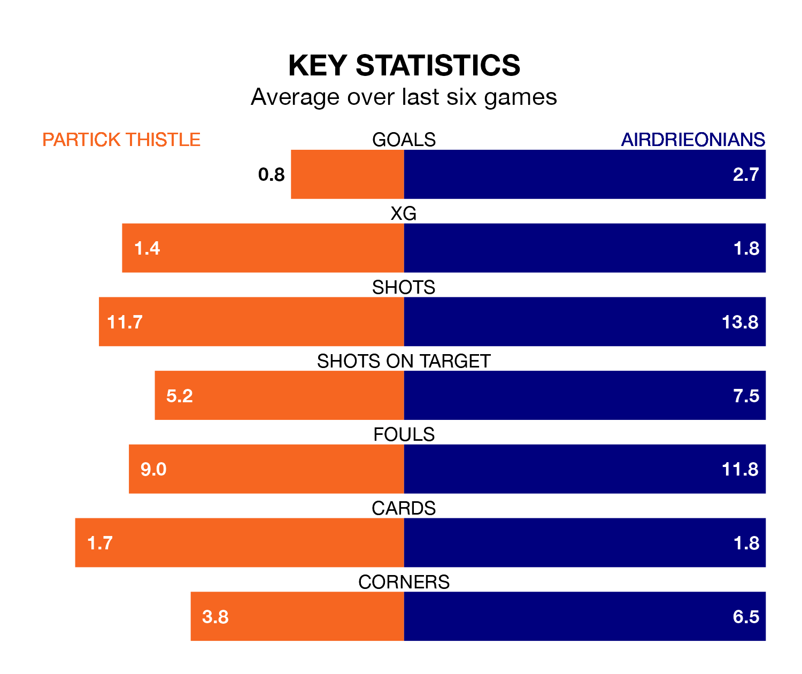

Two of the Championship's top sides face each other at Wyre Stadium at Firhill in Saturday's kick-off, when third-placed Partick Thistle host fourth-placed Airdrieonians.
Partick Thistle have picked up 13 wins and 12 draws from 33 games so far this season, and sit on the same number of points as the visitors going into the 3pm match.
Airdrieonians, meanwhile, have won 15 and drawn six, picking up 51 points.
With 58 goals in 33 games so far this season, Partick Thistle are the league's second-highest scorers with 1.8 goals per game. But they are conceding more than average too, letting in 50 goals at a rate of 1.5 per game.
Airdrieonians, meanwhile, are below average scorers, with 1.3 goals per game, compared to a league average of 1.4. They have conceded 1.2 goals per game.
In Brian Graham, Thistle have the league's sharpest shooter so far this season. He has notched 18 goals in 31 appearances.
His goal rate of one every 144 minutes is quicker than that of Nikolay Todorov, the away side's top scorer with a goal every 279 minutes, and a total of six goals in 31 games.
In the last 10 years, Partick Thistle and Airdrieonians have played each other on 10 occasions. Partick Thistle won eight of them, Airdrieonians one, and they drew once.
On average, Thistle scored 1.6 goals and Airdrieonians 0.8 in those matches.
Their last meeting was on January 27, when they played out a 1-1 draw.
The hosts are in reasonable form in the Championship, with three wins and two draws from their last six games.
With five wins and one loss over that period, Airdrieonians's form is better – they have taken 15 points from 18, compared to Partick Thistle's 11.
Partick Thistle's last match was on April 13, a 0-0 draw against Raith Rovers.
Airdrieonians beat Dunfermline Athletic 2-1 last time out, also on April 13, with Dean McMaster and Gavin Gallagher on the scoresheet.
Saturday's match will be refereed by Iain Snedden, who has taken charge of 10 Championship games so far this season, issuing one red card and booking 46 players. He has awarded four penalties.
The last Partick Thistle game Snedden refereed was a 2-2 away draw with Queen's Park on March 9. His last Airdrieonians match was their 2-1 loss at home against Ayr United on October 7.
Updated: 15:40 (UTC), 18/04/24